Case File
- Pages — add page count
- Genre — Fiction / Fantasy / Historical
For four hundred years, the kings of Danjeri have been Weighed onto the throne by a rite built never to give a straight answer: a Recounter recites the candidate’s ancestry from memory, the court watches the smoke and the bull, and the ancestors, being dead, decline to commit. It has always been treated as a feature. Nobody has ever needed it to say no.
Then a wandering healer, who is also a field Observer for an ancient civilization that studies how little it takes to bring a stable culture down, carries something into the palace at Kambaso that he was never authorized to carry. He does it for a dying boy. He loses it to a dog.
The dog does not die. It does not even grow grey. A kennel hand begins to count its blinks, its breaths, the whorl of fur at its shoulder. A beer-house gives the animal a name, a trader coins a joke, a young Recounter turns the joke into liturgy, and a queen puts a line in the treasury ledger that no clerk will ever dare to stop copying. Meanwhile, down a palace corridor, three wives raise three sons by a ledger nobody writes down, and a second Observer arrives in the salt trade, buys nothing, and begins to do the sums.
The Dog Is Not in It is a quiet, cumulative tragedy of succession, grief and bookkeeping: a kennelmaster who only ever wanted to keep a promise he was never meant to understand, a Chief Recounter who knows exactly what his faith can and cannot say, and a rite that has survived four centuries on ambiguity and is about to be asked its first real question. No one in this book is a villain. Almost everyone is careful. The ledger balances anyway.
Principal Subjects

Kolo
Takes a dog from a weeping healer as a boy, counts its blinks and the arms of the whorl at its withers for fifty years, and buries it under the hill of sandals.

Fode
Hears a drunk's joke at a beer-house, says nothing at the Weighing, says one perfect sentence at the Second Asking, and does the rest alone, unentered, on the day nothing is.

Doni
Warms cold feet, steals only left-footed sandals, never grows grey, and is turned by a kingdom into a mandate, a fraud, a sign, a standard and a target.

Sana
Carries a cell no larger than a date pit into a palace for a dying boy, loses it to his own dog in the time it takes to draw water from a well, and does not reach for a blade.

Sekou
Is sent to a kennel yard at six to be no one's enemy, has a dog sit on his foot, and becomes the best king the granary-keepers think Danjeri could afford.

Alassane
Is told from his cradle that he will be king, is outranked by a dog, and dies in the shallows of the river he feared, very nearly at peace.
Additional Case Records
36 additional subjects documented
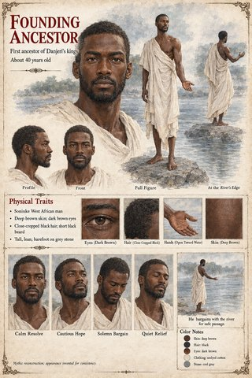
Founding Ancestor Caravan-Master
Caravan-Master Soriba
Soriba Damba
Damba Tiemoko
Tiemoko Household Recounter
Household Recounter Balla
Balla Sitting Elders
Sitting Elders Treasury Clerk (the First Entry)
Treasury Clerk (the First Entry) Awa
Awa Binta
Binta Sata
Sata Bakary
Bakary Hawa
Hawa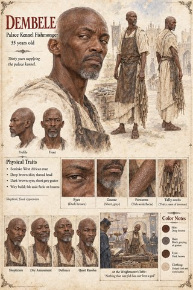
Dembele Bantaran Horse-Lords
Bantaran Horse-Lords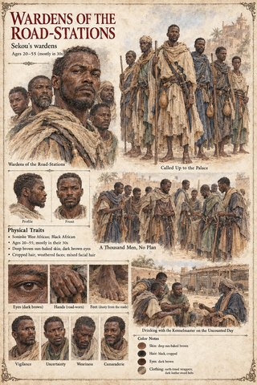
Wardens of the Road-Stations Treasury Clerk (the Household Accounts)
Treasury Clerk (the Household Accounts)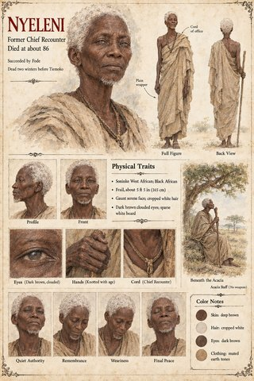
Nyeleni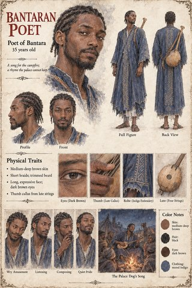
Bantaran Poet- Mansa
 Tuma
Tuma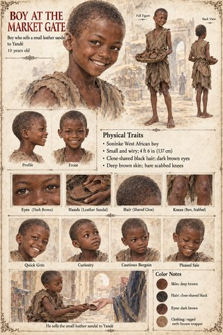
Boy at the Market Gate Kassa
Kassa Kassa's Servant
Kassa's Servant Mory
Mory The Spear-Thrower
The Spear-Thrower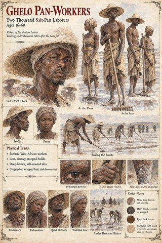
Ghelo Pan-Workers Captains' Council
Captains' Council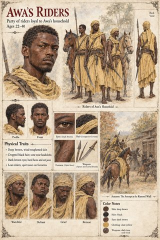
Awa's Riders Bocar
Bocar Bocar's Daughter
Bocar's Daughter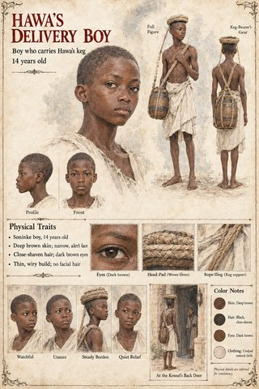
Hawa's Delivery Boy Sira
Sira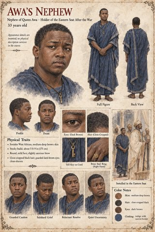
Awa's Nephew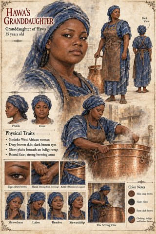
Hawa's Granddaughter
Records
Record illustrations will be filed here once they are ready.
Awaiting Release
Not yet available — this panel will link out once there is somewhere to read it.
Related Cases
 Case 0000The Sword of ValeriaSame catalyst class: Mythic
Case 0000The Sword of ValeriaSame catalyst class: Mythic Case 0157The Stolen Prince WarSame catalyst class: Mythic
Case 0157The Stolen Prince WarSame catalyst class: Mythic Case 0188The Songs Never Mention the CatsSame catalyst class: Mythic
Case 0188The Songs Never Mention the CatsSame catalyst class: Mythic Case 0156The Purging of CharsianonSame catalyst class: Mythic
Case 0156The Purging of CharsianonSame catalyst class: Mythic Case 0247The Tear of the DragonSame catalyst class: Mythic
Case 0247The Tear of the DragonSame catalyst class: Mythic Case 0277The Uncounted VariableSame catalyst class: Mythic
Case 0277The Uncounted VariableSame catalyst class: Mythic